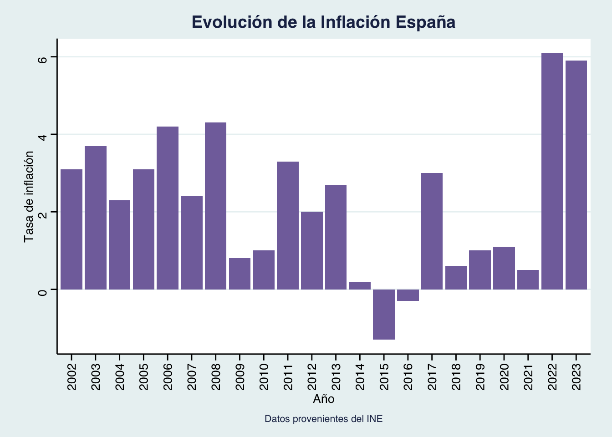

Los pingüinos molan
Intro
Descripción general del trabajo: Datos, Metodología y Definiciones
Comparativa a nivel nacional
Evolución de la inflación para España en Agregado
Código
#- 3.0) Limpieza de los datos del apartado 3 ----
ruta <- "./datos/INE.CSV" #Bajamos los datos extraídos del INE
df_inflacion <- rio::import(ruta)
#Los arreglamos para que solo salga un dato de inflación por año (el dato de inflación que sale corresponde a la inflación anual de enero). El resto de código es solo arreglando los nombres
df0 <- df_inflacion %>%
filter(str_sub(Periodo, 6, 7) == "01") %>%
mutate(Periodo = str_sub(Periodo, 1, 4)) %>%
mutate(`Comunidades y Ciudades Autónomas` = ifelse(`Comunidades y Ciudades Autónomas` != "Nacional",
str_sub(`Comunidades y Ciudades Autónomas`, 4),
`Comunidades y Ciudades Autónomas`)) %>%
select(`Comunidades y Ciudades Autónomas`, Periodo, Total) %>%
rename("CCAA" = `Comunidades y Ciudades Autónomas` ) %>%
mutate(Total = as.numeric(gsub(",", ".",Total)))
#Por si es de utilidad, aquí está el mismo gráfico pero en formato wider
df1 <- df0 %>% pivot_wider(names_from = Periodo, values_from = Total)
df_infl_esp <- df0 %>% filter(`CCAA`== "Nacional")
p2 <- ggplot(data = df_infl_esp,
aes(x = Periodo, y = Total)) +
geom_col(fill = "#8270AA") +
theme_minimal()+
theme_stata() +
labs(title = "Evolución de la Inflación España", caption = "Datos provenientes del INE", x = "Año", y = "Tasa de inflación") +
theme(axis.text.x = element_text(angle = 90, vjust = 0.5, hjust=1), plot.title = element_text(face = "bold", hjust = 0.5), plot.caption = element_text(hjust = 0.5))
p2
Evolución de inflación para todas las Comunidades Autonómas
Código
| CCAA | 2002 | 2003 | 2004 | 2005 | 2006 | 2007 | 2008 | 2009 | 2010 | 2011 | 2012 | 2013 | 2014 | 2015 | 2016 | 2017 | 2018 | 2019 | 2020 | 2021 | 2022 | 2023 |
|---|---|---|---|---|---|---|---|---|---|---|---|---|---|---|---|---|---|---|---|---|---|---|
| Nacional | 3.1 | 3.7 | 2.3 | 3.1 | 4.2 | 2.4 | 4.3 | 0.8 | 1.0 | 3.3 | 2.0 | 2.7 | 0.2 | -1.3 | -0.3 | 3.0 | 0.6 | 1.0 | 1.1 | 0.5 | 6.1 | 5.9 |
| Andalucía | 3.0 | 3.6 | 2.1 | 3.0 | 4.0 | 2.6 | 4.3 | 0.6 | 0.9 | 3.5 | 1.7 | 2.5 | 0.1 | -1.4 | -0.3 | 3.0 | 0.5 | 0.8 | 1.0 | 0.6 | 6.2 | 6.3 |
| Aragón | 3.3 | 3.5 | 2.1 | 3.0 | 4.2 | 2.6 | 4.6 | 1.0 | 1.0 | 3.0 | 2.1 | 2.5 | 0.0 | -1.6 | -0.2 | 2.9 | 0.5 | 1.0 | 1.0 | 0.5 | 6.6 | 5.8 |
| Asturias, Principado de | 3.2 | 3.7 | 2.4 | 2.7 | 4.0 | 2.0 | 4.5 | 0.9 | 1.0 | 3.7 | 2.0 | 2.6 | 0.0 | -1.5 | -0.3 | 3.0 | 0.3 | 0.9 | 0.9 | 0.4 | 5.9 | 6.1 |
| Balears, Illes | 3.2 | 3.9 | 1.8 | 3.2 | 3.8 | 2.5 | 3.8 | 0.8 | 1.2 | 2.7 | 2.1 | 2.8 | 0.5 | -1.1 | -0.1 | 2.9 | 0.7 | 0.7 | 1.1 | 0.7 | 6.0 | 5.7 |
| Canarias | 2.3 | 2.9 | 1.7 | 2.3 | 3.2 | 2.0 | 4.2 | 0.7 | 0.2 | 2.5 | 1.4 | 2.3 | -0.2 | -1.4 | -0.7 | 2.5 | 0.8 | 1.0 | 1.1 | 0.2 | 5.5 | 6.3 |
| Cantabria | 3.0 | 3.5 | 2.2 | 2.6 | 4.1 | 2.3 | 4.7 | 0.7 | 1.2 | 3.5 | 1.9 | 3.5 | 0.3 | -1.7 | -0.4 | 3.1 | 0.4 | 0.9 | 1.1 | 0.5 | 6.2 | 5.7 |
| Castilla y León | 3.1 | 3.5 | 1.8 | 3.0 | 4.3 | 2.4 | 4.5 | 0.4 | 1.0 | 3.5 | 2.3 | 2.9 | 0.3 | -1.8 | -0.6 | 3.4 | 0.5 | 1.1 | 1.1 | 0.4 | 6.7 | 6.5 |
| Castilla - La Mancha | 2.8 | 3.5 | 2.2 | 3.2 | 4.6 | 2.0 | 4.7 | 0.1 | 0.9 | 3.7 | 2.2 | 2.5 | 0.1 | -2.0 | -0.6 | 3.3 | 0.6 | 0.7 | 1.4 | 0.2 | 7.2 | 6.9 |
| Cataluña | 3.1 | 4.1 | 2.8 | 3.6 | 4.6 | 2.4 | 4.4 | 1.1 | 1.4 | 3.3 | 2.2 | 3.3 | 0.3 | -0.9 | 0.0 | 3.1 | 0.9 | 1.0 | 1.2 | 0.4 | 5.9 | 5.3 |
| Comunitat Valenciana | 2.9 | 3.7 | 2.1 | 3.2 | 4.1 | 2.4 | 4.2 | 0.9 | 0.9 | 3.3 | 1.9 | 2.5 | 0.1 | -1.4 | -0.5 | 3.0 | 0.4 | 1.0 | 1.0 | 0.5 | 6.2 | 5.7 |
| Extremadura | 2.8 | 3.1 | 1.8 | 2.6 | 3.5 | 2.1 | 4.3 | 0.7 | 0.9 | 3.4 | 1.7 | 2.7 | -0.1 | -1.5 | -0.6 | 2.9 | 0.2 | 1.0 | 1.0 | 0.6 | 6.5 | 6.6 |
| Galicia | 3.2 | 4.0 | 2.2 | 3.1 | 4.1 | 2.1 | 4.4 | 0.5 | 1.2 | 3.4 | 2.2 | 2.5 | 0.4 | -1.4 | -0.5 | 3.2 | 0.6 | 0.8 | 1.2 | 0.4 | 6.8 | 6.4 |
| Madrid, Comunidad de | 3.1 | 3.6 | 2.4 | 2.9 | 4.1 | 2.5 | 4.0 | 1.0 | 1.1 | 3.1 | 2.0 | 2.4 | 0.2 | -1.3 | -0.2 | 2.7 | 0.7 | 1.3 | 0.9 | 0.4 | 5.6 | 5.3 |
| Murcia, Región de | 2.5 | 4.4 | 2.9 | 2.9 | 4.6 | 2.5 | 4.4 | 0.4 | 0.9 | 3.3 | 1.8 | 2.8 | 0.2 | -1.6 | -0.2 | 3.0 | 0.0 | 0.6 | 1.2 | 0.4 | 6.2 | 6.3 |
| Navarra, Comunidad Foral de | 3.6 | 3.7 | 2.3 | 3.1 | 4.2 | 1.8 | 4.2 | 0.9 | 0.5 | 3.0 | 2.3 | 2.8 | -0.4 | -1.4 | -0.1 | 2.9 | 0.3 | 1.3 | 1.2 | 0.4 | 6.3 | 6.4 |
| País Vasco | 3.3 | 3.5 | 2.4 | 2.9 | 4.2 | 2.4 | 4.1 | 1.3 | 0.9 | 3.1 | 2.0 | 2.5 | 0.6 | -1.0 | 0.1 | 2.9 | 0.5 | 1.0 | 1.4 | 0.6 | 6.0 | 5.6 |
| Rioja, La | 3.6 | 3.7 | 2.3 | 3.2 | 4.5 | 2.7 | 4.2 | 0.8 | 0.7 | 3.4 | 2.2 | 2.6 | 0.0 | -1.2 | -0.2 | 3.1 | 0.2 | 1.1 | 1.1 | 0.3 | 6.6 | 6.2 |
| Ceuta | 3.2 | 3.6 | 3.1 | 2.5 | 3.7 | 2.3 | 3.4 | 1.2 | 1.4 | 2.2 | 1.7 | 1.8 | 0.0 | -0.8 | -0.5 | 2.5 | -0.3 | 0.8 | 0.3 | 0.6 | 5.5 | 6.6 |
| Melilla | 1.7 | 3.8 | 2.6 | 3.7 | 4.6 | 3.2 | 3.5 | 0.8 | 1.8 | 2.9 | 1.2 | 1.1 | -0.2 | -0.7 | -0.7 | 2.8 | 0.6 | -0.5 | 0.8 | 1.6 | 6.7 | 6.9 |
Comunidad con mayor inflación para cada año
Código
df2 <- df0 %>%
group_by(Periodo) %>%
slice_max(order_by = Total, n = 1) %>%
ungroup() %>%
arrange(Periodo)
# Crear el gráfico base con ggplot
p <- ggplot(data = df2, mapping = aes(x = Periodo, y = Total, fill = CCAA)) +
geom_bar(stat = "identity", position = "identity", width = 0.7) +
labs(title = "Evolución de la Comunidad con mayor Inflación cada año", tag = "ESPAÑA") +
guides(fill = FALSE) +
theme_minimal() +
theme(legend.position = "none", axis.text.x = element_text(angle = 45, hjust = 1))
# Convertir el gráfico base a un gráfico interactivo con plotly
p_interactivo <- ggplotly(p, tooltip = "CCAA")
# Mostrar el gráfico interactivo
p_interactivoTres comunidades con mayor inflación anual en la historia
Código
#Tres comunidades con mayor inflación
df1_long <- df1 %>%
gather(key = "Año", value = "Inflacion", - CCAA)
# Seleccionar las tres observaciones con los valores más altos de inflación
top_3_inflacion <- df1_long %>%
arrange(desc(Inflacion)) %>%
slice_head(n = 3)
tabla <- top_3_inflacion %>%
kable() %>%
kable_styling(bootstrap_options = c("striped", "hover", "condensed", "responsive"),
font_size = 45, full_width = TRUE)
tabla| CCAA | Año | Inflacion |
|---|---|---|
| Castilla - La Mancha | 2022 | 7.2 |
| Castilla - La Mancha | 2023 | 6.9 |
| Melilla | 2023 | 6.9 |
Tres comunidades con menor inflación anual en la historia
Código
| CCAA | Año | Inflacion |
|---|---|---|
| Castilla - La Mancha | 2015 | -2.0 |
| Castilla y León | 2015 | -1.8 |
| Cantabria | 2015 | -1.7 |
Tabla top 3 CCAA más ricas de 2021
Código
# Crear un dataframe con los datos para 2021 del PIB pc
ruta1 <- "./datos/pibpccomunidades.xlsx"
df_pibpc <- rio::import(ruta1)
#Hago una taba para las tres comunidades con mayor PIB pc
top_3_pibpc <- df_pibpc %>%
arrange(desc(Valor)) %>%
slice_head(n = 3)
# Crear la tabla con kableExtra
tabla_top_pibpc <- top_3_pibpc %>%
kable() %>%
kable_styling(bootstrap_options = c("striped", "hover", "condensed", "responsive"),
font_size = 45, full_width = FALSE)
# Mostrar la tabla
tabla_top_pibpc| Comunidad | Valor | Variacion_Anual |
|---|---|---|
| Madrid, Comunidad de | 34821 | 7.7 |
| País Vasco | 32925 | 8.5 |
| Navarra, Comunidad Foral de | 31024 | 7.6 |
Top 3 CCAA más pobres de 2021
Código
bottom_3_pibpc <- df_pibpc %>%
arrange(Valor) %>%
slice_head(n = 3)
# Crear la tabla bonita con kableExtra
tabla_bottom_pibpc <- bottom_3_pibpc %>%
kable() %>%
kable_styling(bootstrap_options = c("striped", "hover", "condensed", "responsive"),
font_size = 45, full_width = FALSE)
# Mostrar la tabla bonita
tabla_bottom_pibpc| Comunidad | Valor | Variacion_Anual |
|---|---|---|
| Andalucía | 18906 | 7.8 |
| Canarias | 18990 | 10.4 |
| Extremadura | 19072 | 6.9 |
Gráfica comparativa de la evolución de sus respectivas inflaciones
Código
# Filtrar las comunidades más ricas (top 3)
comunidades_ricas <- c("Madrid, Comunidad de", "País Vasco", "Navarra, Comunidad Foral de")
df_ricas <- df0 %>%
filter(CCAA %in% comunidades_ricas) %>%
group_by(Periodo) %>%
summarize(promedio = mean(Total))
# Filtrar las comunidades más pobres (bottom 3)
comunidades_pobres <- c("Extremadura", "Andalucía", "Canarias")
df_pobres <- df0 %>%
filter(CCAA %in% comunidades_pobres) %>%
group_by(Periodo) %>%
summarize(promedio = mean(Total))
# Unir los dos conjuntos de datos
df_comparativa <- bind_rows(
mutate(df_ricas, Grupo = "Comunidades Ricas"),
mutate(df_pobres, Grupo = "Comunidades Pobres")
)
# Gráfico interactivo con plotly y tema stata
p3_4_2 <- ggplot(df_comparativa, aes(x = as.numeric(Periodo), y = promedio, color = Grupo, group = Grupo)) +
geom_line() +
labs(title = "Evolución del Promedio de Inflación en Comunidades Autónomas",
x = "Año",
y = "Tasa de Inflación Promedio",
color = "Grupo",
caption = "Datos provenientes del INE") +
theme_stata(base_family="")
# Convertir el gráfico base a un gráfico interactivo con plotly
p_interactivo_3_4_2 <- ggplotly(p3_4_2, tooltip = "Grupo")
# Mostrar el gráfico interactivo
p_interactivo_3_4_2